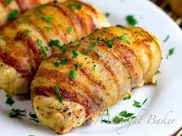

Bacon Wrapped Stuffed Chicken Breast

Ingredients
- 2 full chicken breasts
- 1 package(16oz) of thick cut bacon
- 8oz room temperature cream cheese
- 2 cups shredded mozzarella cheese
- 1/4 cup dried parsely flakes
- 3 tablespoons each of minced garlic and olive oil
- 2 tablespoons each of garlic powder and onion powder
- 1 tablespoons each of salt, pepper, and chili powder
Steps
- Preheat oven to 350F
- In a medium bowl, combine cream cheese, mozzarella cheese, minced garlic, and parsley and then set aside
- in a small bowl, combine salt, pepper, onion powder, garlic powder, and chili powder and then set aside
- Butterfly cut chicken breasts in half and then cover with parchment paper or clear wrap and flatten to 1/4 inch thickness using a meat hammer
- Coat the flattened chicken breasts with olive oil and then evenly coat with the seasoning mixture created earlier
- Seperate cream chease mixture into 3 portions, place one portion within each chicken breast and set aside final portion for later
- Fold the chicken breasts over the filling and then evenly wrap with bacon before placing face down within a deep baking pan
- Cover baking pan and cook at 350F and bake for 1 hour 30 minutes
- Uncover chicken and spread the rest of the cream cheese mixture evenly over both chicken breasts and bake uncovered for 30 more minutes
- Serve with your favorite side dishes and enjoy!